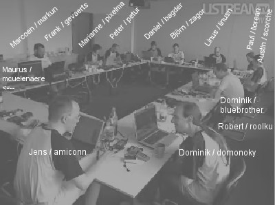

Rockbox DevCon 2008
Live video feed
Closed down, obviously.
This is what it looked like:

Petur is taking photos and uploading them here.
Some movies, including the tower building, are here.
Actual work
We'd had ~2 hours of meeting on saturday, recorded on audio (146MB MP3) and video (streamed flash).
Some topics covered
(Quick summary by Björn, proper notes coming later)
- 3.0 release:
- Yes we want one. No it won't be bug free. Only two real showstoppers identified: Freeze at end of playlist (#9110) and playlist skipping bugs (#8977). When those are fixed, we'll do a short feature freeze, cut away everything that doesn't work and release.
- GPL version:
- We are at v2, because we suspect some imported code is v2-only. We want to move to v2-or-later. V3 is not ruled out, but we'll take it one step at a time.
- Rockbox Steering Board:
- The Rockbox Steering Board will consist of five persons. The purpose of the board is to resolve issues that get stuck in IRC due to conflicting opinions. A nomination and voting procedure will be done among all committers. (Bagder will send mail with more details.)
- Menu and settings layout:
- Basically these are never-ending issues that we delegate to the RSB.
- pluginlib actions:
- Stop trying to shoehorn actions into plugins. Use/create a basic five key context (up/down/left/right/select), and use custom code for everything else.
- Plugins lingering in the tracker:
- Plugins don't have to work on all targets. We should be less afraid of committing.
Meeting #2
Another ~2 hours of meeting on sunday. Audio (171MB MP3) and video (streamed flash).
- New forum guidelines:
- Rewrite the guidelines to make them a bit more friendly. Write reponse templates that every developer can use.
- IRC channels (add #rockbox-dev?):
- We all felt that improved signal/noise-ratio in #rockbox is desirable, but adding a new channel is not really an improvement.
- What to do with the feaure request tracker:
- We make it restricted for developers-only, so that requests are actually relevant. Use the assigned-to field to show who is interested in each item.
- How to stop the manual from lagging behind?
- How do we handle remotes in the manual?
- Remotes should be described in the text, next to the main unit button description. M3 gets the roles reversed: Using the remote is the normal case.
- What is the goal of RBUtil? What should it do and not?
- It should do things that help people use Rockbox. We should keep the console version up-to-date to help blind people. We need constructive help from blind people how to make the tools more accessible.